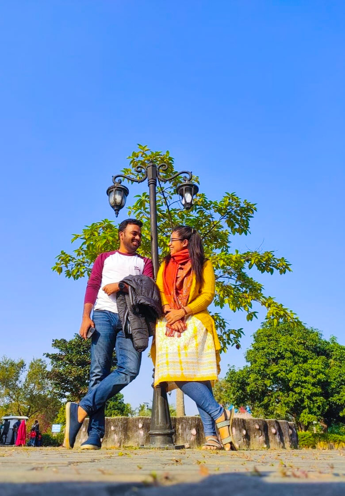

MS
Mofrat Shahriar
Photographer & Visual Artist
Photography Portfolio
Selected Works
A curated selection from recent explorations across genres and light.




Years Shooting
Photos Taken
Countries Visited
Genres Explored
"Photography is the story I fail to put into words."— Destin Sparks
About the Photographer
Based wherever the light takes me, I'm a passionate photographer drawn to the intersection of stillness and emotion. With a background rooted in natural landscapes and a curiosity for human expression, my lens seeks the extraordinary in the everyday.
Whether it's the texture of a dew-covered leaf at dawn, the raw gaze of a wild animal, or the quiet drama of a street at twilight — every frame is a conversation between light and intention.